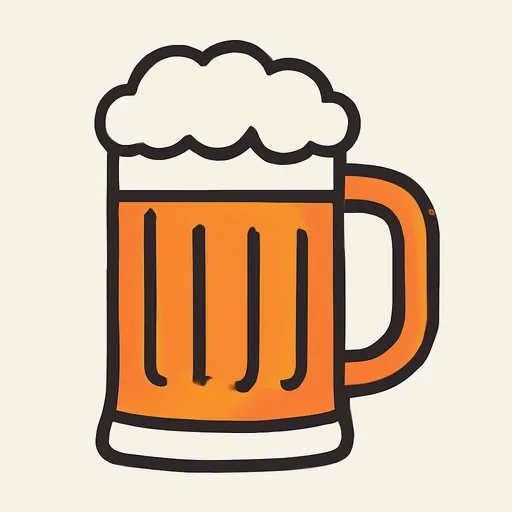
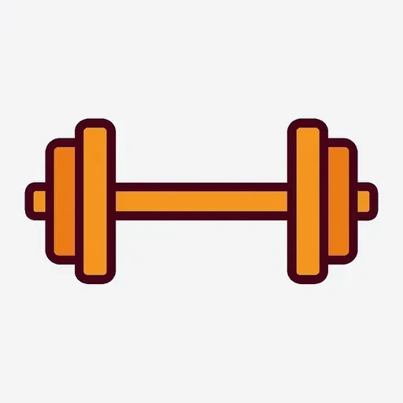

Черновик: урок написан, но преподаватель его ещё не вычитал.
Semana 11 · Día 5 — Querer y preferir: en el bar
Неделя 11 · День 5 — Querer и preferir: в баре
Сегодня вы научитесь
- спрягать querer и preferir (e→ie) и заказывать ими в баре;
- произносить полную формулу заказа: ¿Qué quieres? — Un café con leche, por favor;
- понимать ¿Algo más? и ¿Cuánto es? и разыграть сцену в баре из восьми реплик.
1. Разминка (0–3 мин)
- Карточки: 10 слов (вчерашние: encanta, favorito, flan, azúcar, sopa…).
- Вопрос по вчерашнему: ¿Cuál es tu comida favorita? Ответьте вслух одной фразой и добавьте ступень лестницы.
2. Фонетика (3–6 мин)
z и c перед e / i — не «ц». Русское ухо слышит в cerveza звук [ц], и получается [церве́ца]. В испанском этих букв два чтения, и оба не «ц»:
la cerveza · el azúcar · el zumo · la cebolla · la cena · doce · once · gracias · dulce
- 🌎 В Испании (центр и север) z и c перед e/i — это [θ]: межзубный звук, как английское th в think. Кончик языка между зубами: [θerˈβeθa].
- 🌎 В Америке, на Канарах и на юге Испании — обычное [s] (это называется seseo): [serˈbesa].
Выберите один вариант и держитесь его. Чего нельзя — это [ц]: [ц] не существует в испанском ни в одном варианте. Запишите девять слов.
3. Новое (6–16 мин)
Пример
Суббота, полдень. Paula и Serguéi в баре на углу. [AUDIO]
| Español | Русский |
|---|---|
| Camarero: Buenos días. ¿Qué quieren tomar? | Доброе утро. Что будете (хотите взять)? |
| Paula: Yo quiero un café con leche y una tostada con mantequilla. | Я хочу кофе с молоком и тост с маслом. |
| Camarero: ¿Y usted? | А Вы? |
| Serguéi: Para mí, un zumo de naranja. ¿Y tienen té? | Мне апельсиновый сок. А чай есть? |
| Camarero: Sí, ¿quiere té con limón o té con leche? | Да, Вы хотите чай с лимоном или с молоком? |
| Serguéi: Entonces prefiero el té con limón, no el zumo. Y una tapa de tortilla. | Тогда я предпочитаю чай с лимоном, а не сок. И тапас с тортильей. |
| Camarero: ¿Algo más? | Что-нибудь ещё? |
| Paula: No, nada más, gracias. | Нет, больше ничего, спасибо. |
| Serguéi: Perdón, ¿cuánto es? | Простите, сколько с нас? |
| Camarero: Son ocho euros. | Восемь евро. |
Прочитайте диалог вслух за трёх человек. Посчитайте формы querer и preferir.
Объяснение
querer (хотеть) и preferir (предпочитать) — e→ie. Чередование вы знаете с прошлой недели (empiezo, vuelvo, duermo): гласная меняется там, где на неё падает ударение, то есть во всех формах, КРОМЕ nosotros и vosotros — ровно как русское е/ё в «несёшь — несём».
| querer | preferir | |
|---|---|---|
| yo | quiero | prefiero |
| tú | quieres | prefieres |
| él / ella / usted | quiere | prefiere |
| nosotros / as | queremos | preferimos |
| vosotros / as | queréis | preferís |
| ellos / ellas / ustedes | quieren | prefieren |
Что ставится после них:
| После querer / preferir | Пример | Русский |
|---|---|---|
| существительное с артиклем | Quiero un café. | Я хочу кофе. |
| инфинитив | Quiero tomar algo. Prefiero cenar tarde. | Хочу что-нибудь выпить. Предпочитаю ужинать поздно. |
| одно из двух, через o | ¿Quieres té o café? | Хочешь чай или кофе? |
Формулы бара — выучить целиком. Это куски, которые не разбираются по словам: их просто говорят.
| Español | Русский | Кто говорит |
|---|---|---|
| ¿Qué quieres tomar? / ¿Qué quiere(n) tomar? | Что будешь / будете? | официант |
| ¿Qué le pongo? 🌎 ¿Me pone un café? | Что Вам? / Можно мне кофе? (Испания) | официант / клиент |
| Un café, por favor. | Кофе, пожалуйста. | клиент |
| Para mí, un zumo. | Мне апельсиновый сок. | клиент |
| ¿Algo más? — No, nada más, gracias. | Что-нибудь ещё? — Нет, спасибо. | официант / клиент |
| ¿Cuánto es? — Son nueve euros con cincuenta. | Сколько с меня? — 9,50. | клиент / официант |
Повторение из 4-й недели (магазин): ¿Algo más?, ¿Cuánto cuesta?, en total, el euro, el céntimo, Aquí tiene — всё это работает и в баре. И querer вы спрягали на 10-й неделе. Новое сегодня: preferir, формулы заказа и ¿Cuánto es? вместо ¿Cuánto cuesta? для всего счёта.
🌎 В Испании у стойки говорят коротко: Un café con leche, por favor или ¿Me pone un café con leche? — и это вежливо. В Америке вместо ¿me pone? чаще говорят Me da un café, por favor.
Как читаются цены. Запятая, не точка: 1,50 €. Вслух — два способа:
1,50 € → un euro cincuenta / uno con cincuenta 2,00 € → dos euros 3,20 € → tres euros veinte / tres con veinte ¿Cuánto es? — Son cuatro euros. (мн. ч.! Es только для одного евро: Es un euro.) Проверьте по карте бара ниже, сколько стоит заказ Paula и Serguéi в диалоге.
Карта бара (цены придуманы для этого упражнения — в настоящем баре они другие):
BAR LA ESQUINA · precios de ejemplo café solo 1,20 € · café con leche 1,50 € · té 1,50 € · zumo de naranja 2,50 € · agua 1,00 € · cerveza 2,00 € · tostada con mantequilla 2,00 € · bocadillo de jamón 4,00 € · tortilla de patatas (tapa) 3,00 € · flan 2,50 €
⚠️ Контраст с русским
- В русском заказ делают без глагола «хотеть»: «Мне кофе, пожалуйста» — дательный и всё. Или будущим временем: «Я буду кофе». А «Я хочу кофе» в русском звучит немного по-детски, поэтому русский от этой формы уходит.
- В испанском глагол нужен — и Quiero un café совершенно вежливо, если рядом есть por favor. Второй путь — вообще без глагола, но тогда с предлогом para: Para mí, un café. И третий, самый испанский: просто назвать вещь — Un café con leche, por favor.
- Вы захотите сказать: ✗ Me un café, por favor. ✗ Quiero café. (о чашке) ✗ Mejor té. (из «лучше чай») → Правильно: ✅ Para mí, un café, por favor. ✅ Quiero un café. ✅ Prefiero el té.
Что помогает: чередование e→ie вам уже знакомо (quiero вы видели на прошлой неделе, в empezar и querer), и логика «меняется под ударением» совпадает с русским е/ё. Новое сегодня только preferir — это -ir, но чередование у него то же.
4. Практика (16–26 мин)
Упражнение А. Проспрягайте querer и preferir и дополните фразы.
Модель: Yo ___ (querer) un café. → Yo quiero un café
- Yo ___ (querer) una cerveza.
- ¿Tú ___ (querer) té o café?
- Serguéi ___ (preferir) el té con limón.
- Nosotros ___ (querer) dos tapas.
- ¿Vosotros ___ (preferir) cenar en casa o en el bar?
- Paula y Carlos ___ (querer) un zumo de naranja.
- Yo ___ (preferir) el queso, no el jamón.
- ¿Usted ___ (querer) algo más?
- Nosotros ___ (preferir) desayunar temprano.
- Ellos ___ (preferir) la tortilla de patatas.
Упражнение Б. Дополните диалог в баре. Банк слов:
¿Qué quieren tomar? · quiero · Para mí · prefiero · por favor · ¿Algo más? · nada más · ¿Cuánto es? · Son
— Buenas tardes. ______ — Yo ______ un café con leche y una tostada, ______. — ¿Y para usted? — ______, una cerveza. ¿Tienen tapas? — Sí, tortilla de patatas y jamón. — Pues ______ la tortilla. — ______ — No, ______, gracias. ______ — ______ ocho euros cincuenta.
Упражнение В. Исправьте ошибки. В каждой фразе одна ошибка.
Модель: Me Para mí, un café, por favor.
- Me un zumo de naranja, por favor.
- Yo quero una cerveza.
- Mejor té con limón.
- Nosotros prefierimos cenar tarde.
- ¿Qué quieres tomar? — Quiero café. (вы заказываете одну чашку)
- ¿Cuánto es? — Es seis euros.
- Yo prefero el queso.
- ¿Algo más? — No, nada más, por favor.
5. Выход (26–29 мин)
Разыграйте сцену в баре — восемь реплик (четыре официанта и четыре клиента). Напишите её, потом прочитайте вслух за двоих и запишите. Обязательные элементы: приветствие, ¿Qué quiere(n) tomar?, заказ с quiero или para mí, одна фраза с prefiero, ¿Algo más?, ¿Cuánto es? и цена из карты бара.
— Buenos días. ¿Qué quiere tomar? — Quiero un café con leche y una tostada, por favor. — ¿Con mantequilla? — Sí. Y un zumo de naranja. — ¿Algo más? — No, nada más, gracias. ¿Cuánto es? — Son seis euros. — Gracias. Hasta luego.
6. Итог (29–30 мин)
- [ ] Я спрягаю querer и preferir и помню, что nosotros / vosotros без ie.
- [ ] Я заказываю тремя способами: Quiero…, Para mí…, Un café, por favor.
- [ ] Я понимаю ¿Algo más? и ¿Cuánto es? и называю цену с son.
- Добавьте слова дня в колоду. Завтра — повторение недели и мини-тест из 15 вопросов.
Словарь дня
| Español | Русский | Пример |
|---|---|---|
| preferir: prefiero | предпочитать: я предпочитаю | Prefiero el té con limón. |
| ¿Qué quieres tomar? | Что будешь (пить / есть)? | ¿Qué quieres tomar? — Un café. |
| para mí… | мне… (при заказе) | Para mí, un zumo de naranja. |
| nada más | больше ничего | — ¿Algo más? — No, nada más, gracias. |
| ¿Me pone un café? | Можно мне кофе? (Испания) | ¿Me pone un café con leche? |
 la cerveza |
пиво | Una cerveza, por favor. |
| con gas / sin gas | с газом / без газа | Un agua sin gas, por favor. |
 la barra |
стойка в баре | Tomamos un café en la barra. |
Ответы
А. 1. quiero · 2. quieres · 3. prefiere · 4. queremos (без ie!) · 5. preferís (без ie!) · 6. quieren · 7. prefiero · 8. quiere · 9. preferimos (без ie!) · 10. prefieren.
Б. — Buenas tardes. ¿Qué quieren tomar? / — Yo quiero un café con leche y una tostada, por favor. / — ¿Y para usted? / — Para mí, una cerveza. ¿Tienen tapas? / — Sí, tortilla de patatas y jamón. / — Pues prefiero la tortilla. / — ¿Algo más? / — No, nada más, gracias. ¿Cuánto es? / — Son ocho euros cincuenta. (1,50 + 2,00 + 2,00 + 3,00 по карте бара)
В. 1. Para mí, un zumo de naranja, por favor. (✗ me — калька с дательного «мне») · 2. Yo quiero una cerveza. (e→ie, не quero) · 3. Prefiero el té con limón. (✗ mejor té — калька с «лучше чай») · 4. Nosotros preferimos cenar tarde. (nosotros БЕЗ ie) · 5. Quiero un café. (чашка — исчисляемая, нужен артикль) · 6. Son seis euros. (es только для одного евро) · 7. Yo prefiero el queso. (чередование есть и в yo: prefiero) · 8. No, nada más, gracias. (por favor — при просьбе, gracias — при отказе и благодарности).